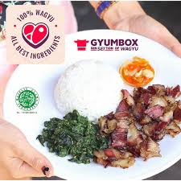
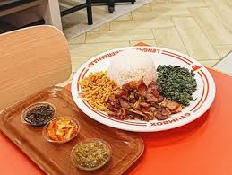
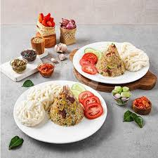

-



|
Kuliner Tangerang adalah website yang memberikan beberapa informasi mengenai kuliner yang sangat hits ditahun 2025 ini! Kuliner Tangerang berkomitmen untuk terus memberikan informasi kepada anda tentang informasi terkini tentang kuliner yang sangat populer dan pastinya ditangerang, jangan lupa untuk sering berkunjung ke Kuliner Tangerang yaaa! |
Terimakasih sudah berkunjung, bila ada kritik & saran hubungi kami E-mail: mugi.gokil99@gmail.com Whatsapp: 085939752033 |